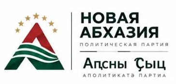
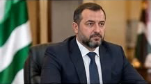

Экономика
Экономика18 июня 2025

Ацҳара ду — ҳатәыла, ҳажәлар, ҳ ԥеиԥш
Никто не остается один
Возможности для каждого
Идентичность и культура
Диалог и партнерство
Новые рабочие места, поддержка предпринимателей и прозрачные правила для инвестиций.
Подробнее →Современные школы, достойный труд учителя и возможности для молодежи.
Подробнее →Доступная помощь в каждом районе и обновление ключевых медицинских центров.
Подробнее →Сохранение абхазского языка, наследия и поддержка современной культуры.
Подробнее →
Лидер партии«Наша цель — сильная, современная и процветающая Абхазия, где каждый человек уверен в завтрашнем дне.»
Лидер политической партии «Новая Абхазия»
Биография →Помог создать программу грантов для молодых предпринимателей.
Читать историю →Экономика Регионы
Регионы Общество
Общество